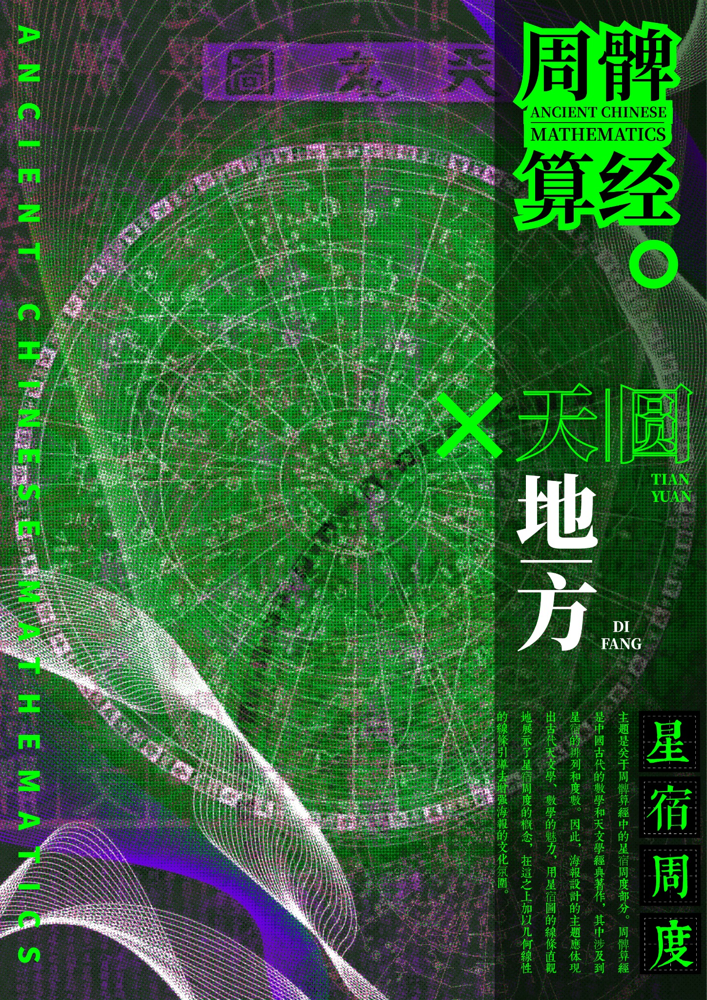
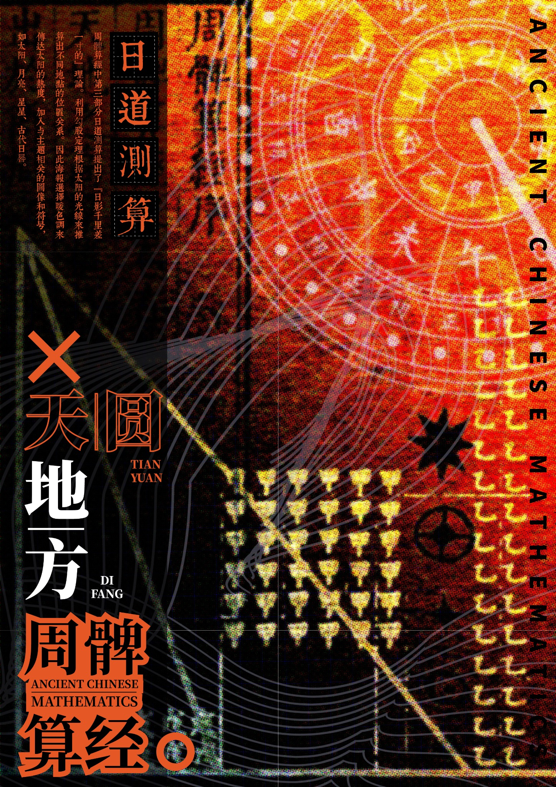

07 / 项目案例
古算之光：周髀算经微探
Ancient Chinese Mathematics
Graphic Design / Competition Project
Adobe Photoshop / Adobe Illustrator
2024 年上海市计算机应用能力大赛团队参赛作品。
设计理念
Design Concept
本系列以《周髀算经》中的数学与天文知识为视觉创作基础，将「天圆地方」「日道测算」「七衡四极」「星宿周度」等传统概念转化为现代平面设计语言。
在视觉表达上，运用几何线条、天文图形、传统文化符号与实验性字体排版，结合高饱和度的撞色、网点纹理和图形叠加，创造兼具历史文化内涵与现代视觉冲击力的系列海报。
设计希望以更加年轻化、当代化的方式重新呈现中国古代数学文化，让抽象的科学知识转化为更具视觉感染力的艺术表达。
系列海报
Poster Gallery




